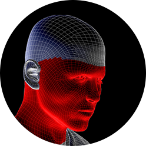
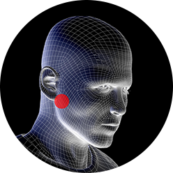

1.Доброкачественные мягкотканные образования головы и шеи:
- Атеромы, ( более 10.000)
- Папилломы ( более 10.000)
- Дермоидные кисты (более 10.000)
- Боковые и срединные кисты шеи ( более 1.000)
- Срединные свищи шеи (более 500)
Подробнее
2. Доброкачественные костные новообразования:
- Амелобластомы ( более 500)
- Кератокисты ( более 500)
- Резекции челюстей по поводу образований ( более 100)
- Резекция верхней челюсти частичная и тотальная верхней челюсти (около 20)
- Резекция нижней челюсти частичная и тотальная (около 80)
Подробнее
3. Операции на верхне-челюстных пазухах, синусах
- Гайморотомии ( более 10.000)
- Удаление кист пазух, удаление полипов
- Подготовка к синус-лифтингу
- Операция как открытая так и эндодонтическая гайморотомия
Подробнее
4. Операции на слюнных железах
- Удаление подчелюстных слюнных желёз ( более 10.000)
- Удаления камня подчелюстной слюнной железы из протока, из тела самой железы
- Удаление камней околоушной слюнной железы
- Удаление кист слюнных желез
- Удаление полиморфных аденом слюнных желез (смешанная опухоль)
- Удаление мономорфных аденом слюнНЫХ ЖЕЛЕЗ
Подробнее

5. Реконструктивно-восстановительные операции
- Восстановление дефекта челюстей титановыми протезами, аутотрансплантатами (подвздошной, теменной, малоберцовой костью)
- Восстановление асимметрий лица силиконовыми протезами
- Ортогнатические операции, на верхней и нижней челюсти для исправления зубо-челюстной аномалии ( небольшой опыт)
- Операции по Даль-Понту, Обвейгейзеру, Лимбергу, Сукачеву
- Гениопластика
- Резекция языка
Подробнее

6. Травма челюстно- лицевой области
- Лечение переломов челюстей ( более 10.000)
- Переломы суставного отростка нижней челюсти, переломы угла нижней челюсти, переломы тела нижней челюсти, срединные переломы челюстей
- Переломы верхней челюсти, по Лефор -1,2,3.
- Переломы скуловых костей, переломы скуловой дуги
- Переломы скуло-глазничного комплекса
Подробнее

7. Удаление зубов
- Любой степени тяжести, в том числе расположенных в верхней-челюстной пазухе и в ветви челюсти ( более 100.000)
- Резекция верхушек корней
- Гемисекция
Подробнее
8. Дентальная имплантация (более 1.000)
- Установка дентальных имплантатов Astra-Tech, Alpha-Bio, SGS, Nobel, Xive и многие другие
- Костная пластика костными блоками с ветви челюсти
- Костная пластика титановыми сетками
- Направленная костная регенерация искусственным костным материалом и мембраной
- Операция открытый и закрытый синус лифтинг
Подробнее
9. Лечение гнойно-�воспалительных заболеваний головы и шеи
Подробнее

10. Заболевания височно нижнечелюстного сустава
Подробнее
11. Ортогнатические операции
Подробнее